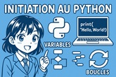

Préparer son CV et LM
La recherche d’un stage commence généralement par la préparation d’un CV et d’une lettre de motivation. Ces deux documents sont essentiels pour se présenter aux entreprises de manière claire et sérieuse. Le CV permet de résumer son parcours scolaire, ses compétences et ses centres d’intérêt, tandis que la lettre de motivation explique ses objectifs et l’intérêt porté à l’entreprise. Leur rédaction constitue une première étape importante dans la découverte du monde professionnel.
Préparer les entretiens
Après avoir envoyé son CV et sa lettre de motivation, il est possible d’être contacté pour un entretien. La préparation de cet échange est une étape importante dans la recherche de stage. Elle permet de se présenter de manière confiante, claire et professionnelle. Il est essentiel de se renseigner sur l’entreprise, de réfléchir à ses motivations, et de préparer des réponses aux questions fréquentes, tout en étant capable d’expliquer son projet d’orientation. Bien se préparer à un entretien augmente ses chances de convaincre l’employeur et de faire bonne impression.
Trouver un stage
Trouver un stage de découverte en classe de seconde ou au lycée est une étape importante dans l’orientation des élèves. Cependant, cette recherche s’avère souvent difficile. Entre le manque de réponses des entreprises, la concurrence dans certains secteurs et l'absence de réseau professionnel, de nombreux jeunes rencontrent des obstacles. Cette situation soulève la question de l’accessibilité réelle à ces stages pourtant obligatoires.Rédiger son rapport de stage
La rédaction d’un rapport de stage est l’occasion de faire le bilan de l’expérience vécue en entreprise. Elle permet de présenter le lieu du stage, les missions accomplies, ainsi que les connaissances acquises tout au long de cette période. Ce travail d’analyse et de réflexion aide à mieux comprendre le fonctionnement du monde professionnel et à évaluer en quoi ce stage peut contribuer à un projet d’orientation. Ce rapport rend compte de mon immersion au sein de l’entreprise où j’ai effectué mon stage.
Les domaines de l'informatique
L’informatique est un domaine très vaste, présent dans tous les secteurs de la société. Elle regroupe plusieurs spécialités comme le développement de logiciels, la cybersécurité, la gestion des réseaux, l’intelligence artificielle ou encore le traitement des données. Ces domaines sont en constante évolution et offrent de nombreuses possibilités d’apprentissage et d’orientation professionnelle.
La programmation
La programmation est une activité qui consiste à écrire des instructions compréhensibles par un ordinateur, dans un langage spécifique appelé langage de programmation. Elle permet de créer des logiciels, des sites web, des applications ou encore des jeux. En donnant des ordres précis à la machine, le programmeur contrôle son comportement. La programmation développe la logique, la rigueur et la créativité. C’est un domaine essentiel dans l’informatique, présent dans presque tous les objets numériques du quotidien.
Initiation au Python
Python est un langage de programmation simple et accessible, idéal pour débuter en informatique. Grâce à sa syntaxe claire, il permet d’apprendre rapidement les bases de la programmation, comme les variables, les conditions ou les boucles. Utilisé dans de nombreux domaines, Python aide à développer la logique, la rigueur et la créativité. Son apprentissage constitue une première étape vers la compréhension du monde numérique.
Initiation au Python orienté IA
Python est un langage de programmation idéal pour débuter dans le domaine de l’intelligence artificielle. Grâce à sa syntaxe simple et à ses nombreuses bibliothèques spécialisées, il permet de manipuler des données, de créer des modèles d’apprentissage automatique et de comprendre les bases du fonctionnement d’une IA. Cette initiation offre une première approche concrète d’un domaine innovant et en pleine expansion.
Dévelopement Python

This is Halcyonic, a free site template by AJ for HTML5 UP. It's responsive, built on HTML5 + CSS3, and includes 5 unique page layouts.
Formation dév. initiation Python

Yes! Halcyonic is built to be fully responsive so it looks great at every screen size, from desktops to tablets to mobile phones.
Initiation au Python

Halcyonic is licensed under the CCA license, so use it for personal/commercial use as much as you like (just keep our credits intact).
Formation dév. Site internet

Duis neque nisi, dapibus sed mattis quis, rutrum accumsan sed. Suspendisse eu varius nibh. Suspendisse vitae magna mollis.